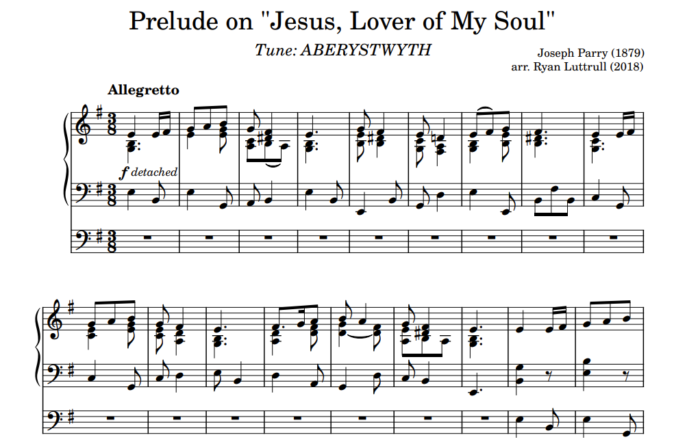
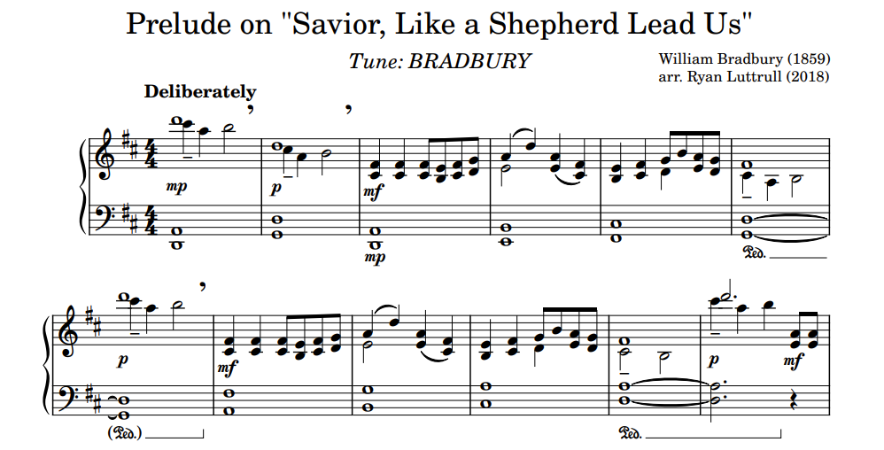
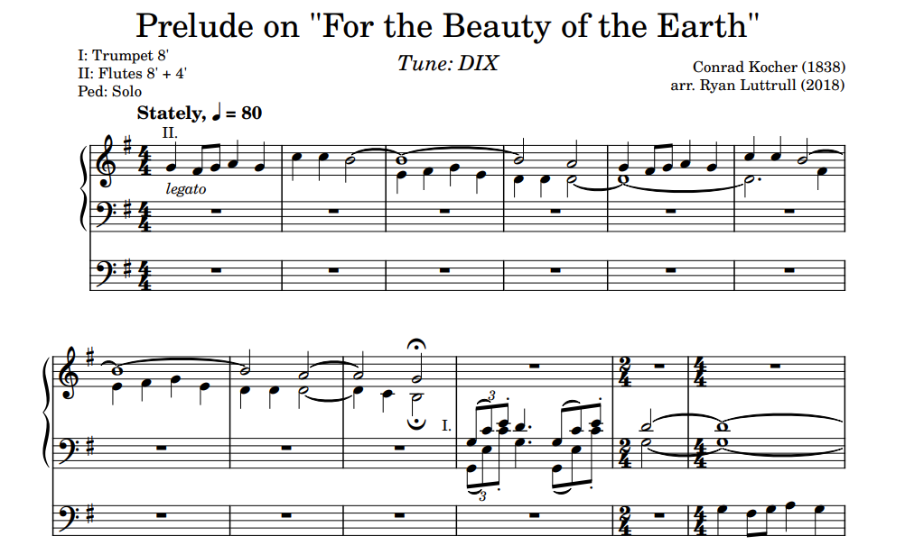
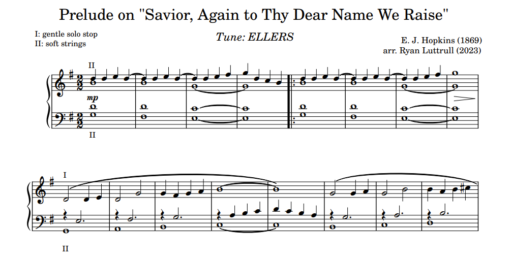
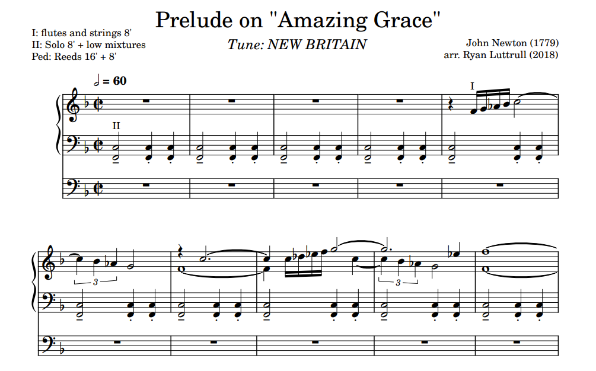
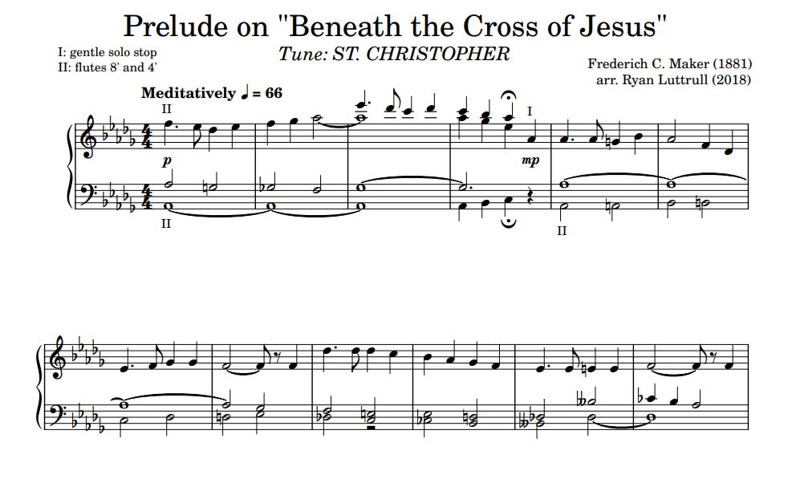
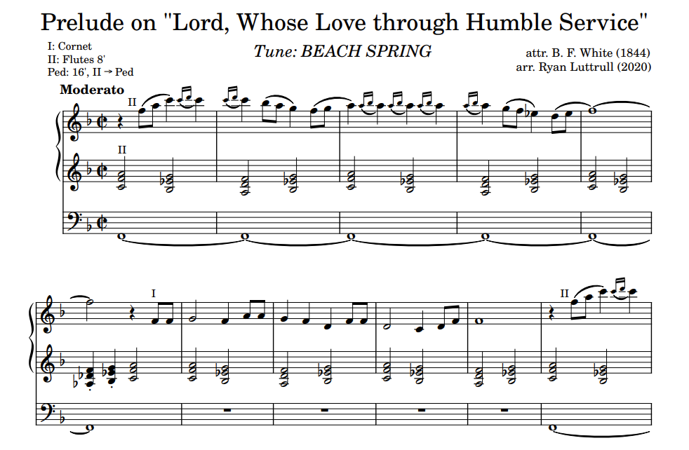

Works
Available for Download

These works are licensed under a Creative Commons Attribution-ShareAlike 4.0 International License.
This music is free to download — if you enjoy it, please consider giving back via Venmo:

Ensemble

Concertpiece for Eight Horns: Mvt. 1, by Robert Schumann/arr. Ryan Luttrull
Features four solo horns and four "orchestral" horns. For eight individual players.

The Easy Winners, by Scott Joplin/arr. Ryan Luttrull
Arranged for six horn parts. Doubling possible.

Prelude No. 2, by George Gershwin/arr. Ryan Luttrull
Arranged for horn quartet and piano. Transposed to C minor.

Prelude No. 2, by George Gershwin/arr. Ryan Luttrull
Arranged for brass quintet and piano. Transposed to C minor.
Keyboard

1.5 mins
Prelude on "Jesus, Lover of My Soul"
Tune: Aberystwyth. Lively dance in 3. For organ.

2 mins
Prelude on "Savior, Like a Shepherd Lead Us"
Tune: Bradbury. For piano.

2 mins
Prelude on "For the Beauty of the Earth"
Tune: Dix. Majestic but not brash. For organ.

2 mins
Prelude on "Savior, Again to Thy Dear Name We Raise"
Tune: Ellers. Simple, without presumption. For organ.

2 mins
Prelude on "Amazing Grace"
Tune: New Britain. For organ.

2 mins
Prelude on "Beneath the Cross of Jesus"
Tune: St. Christopher. For organ.

2 mins
Prelude on "Lord, Whose Love Through Humble Service"
Tune: Beach Spring. For organ.